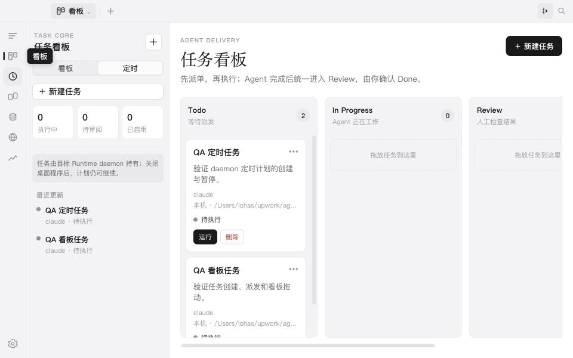

下载并安装
根据 CPU 与系统选择 DMG、Windows 安装器、deb 或 AppImage。macOS 未公证版本首次启动需右键“打开”。
Agent OS 把 AI CLI 会话、原生终端、任务看板、定时执行、对比、记忆搜索和统计放进同一个桌面应用。选择本机或远程 Runtime Host，在真实工作目录里持续推进工作。
左侧导航中的会话、看板、定时、对比、记忆、Web 与统计，都对应下面的真实功能和实机界面。
创建任务并指定 Runtime Host、Agent CLI、模型与工作区；在 Todo、In Progress、Review、Done 四列中跟踪执行。一次性和 Cron 计划由后台 Runtime daemon 持有，桌面窗口关闭后仍可按时运行。

可选择结构化对话或原生 CLI，指定 Runtime Host、Agent、模型、工作目录与权限模式。运行中的连续输入进入持久队列，终端由原生 PTY 驱动。
runtimeHost 的会话编排自动扫描已支持的本机 CLI，并提供安装、升级、诊断和 BYOK 配置；远程节点接入后也可作为会话与任务的运行位置。CLI 厂商账号与登录仍由对应工具管理。
在一个对比任务中并排放入 Web、结构化会话或 CLI 面板，单独发送或批量发送同一问题；内置 Web 书签保留站点登录态。
已支持来源的会话历史进入本地索引，可全文搜索并跳回上下文；记忆页管理经验、候选与策略，统计页展示使用趋势和成长图鉴。
Agent OS 管理工作流，不替代 Claude、Codex 等工具本身的账号、订阅和登录。先准备至少一个可用的 Agent CLI。
根据 CPU 与系统选择 DMG、Windows 安装器、deb 或 AppImage。macOS 未公证版本首次启动需右键“打开”。
首次启动会扫描本机 CLI。在设置中查看状态、安装、升级或诊断；账号授权仍在对应 CLI 中完成。
选择“会话”或“CLI”，再指定 Runtime Host、Agent、模型、工作目录与权限模式，开始真实工作。
在看板新建任务并立即运行，或配置一次性/Cron 计划；Agent 完成后进入 Review，由你确认 Done。
以下均为当前桌面应用的真实界面：任务看板、会话/CLI、对比、Web、统计、成长与设置。
向下滚动浏览界面 ↓
会话记录、全文索引、经验候选与使用统计保存在本机；你可以搜索、回到原会话，并决定哪些内容进入长期记忆。
会话历史按来源统一展示并建立本地全文索引；经验、候选和策略分栏管理，不会把每段对话自动当作长期记忆。
本地记录你与 AI 协作的轨迹，统计与成长系统让无形消耗，变成可见、可回望的积累。
Agent OS 扫描 PATH 与常见安装位置，识别版本和健康状态。实际可用工具取决于你安装并登录的 CLI。
桌面应用提供 macOS、Windows 与 Linux 制品。会话、任务、索引和统计默认保存在本机；调用模型产生的费用与数据策略由所使用的 CLI 和模型服务商决定。
macOS 制品未使用 Apple Developer ID 公证，首次启动请右键应用选择“打开”。
需要远程执行？前往 Release 下载节点包与 install-node.sh。